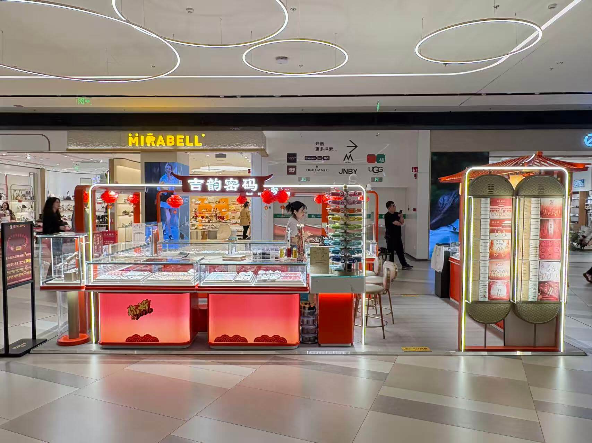
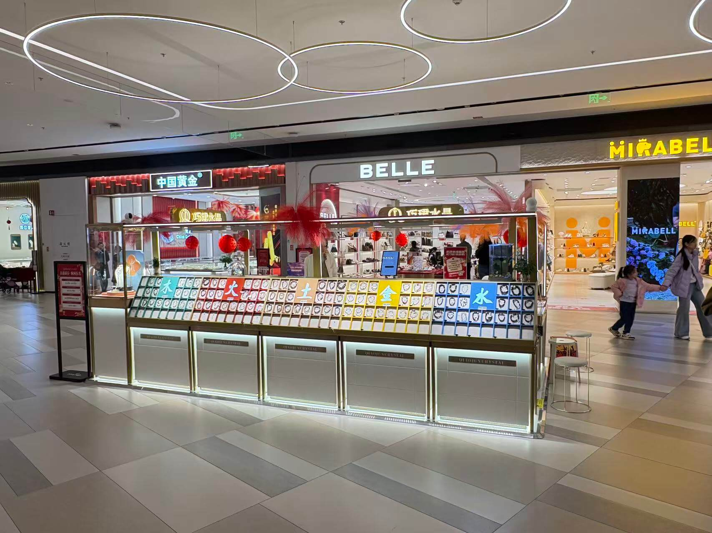
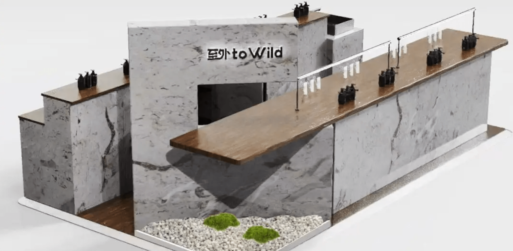
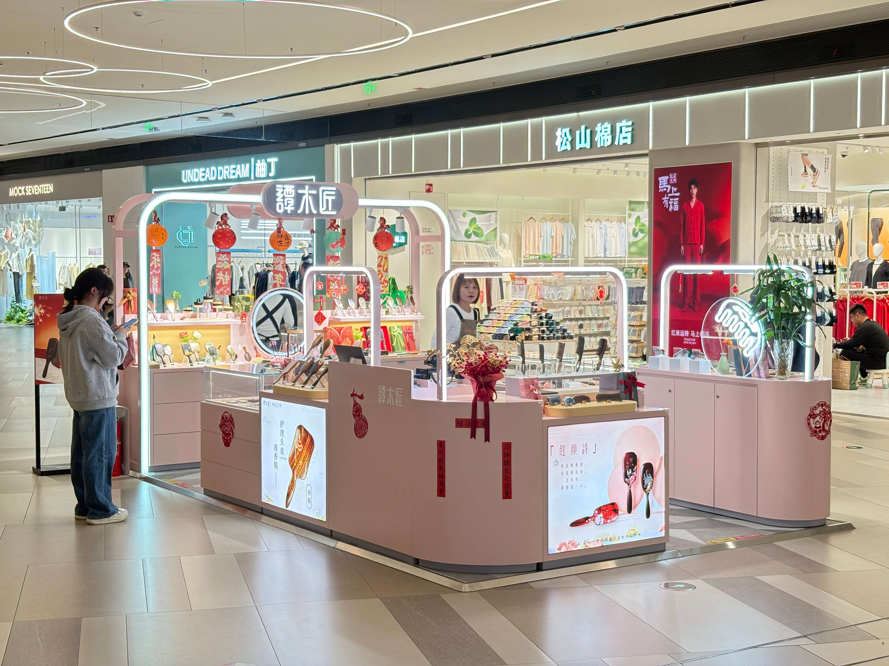
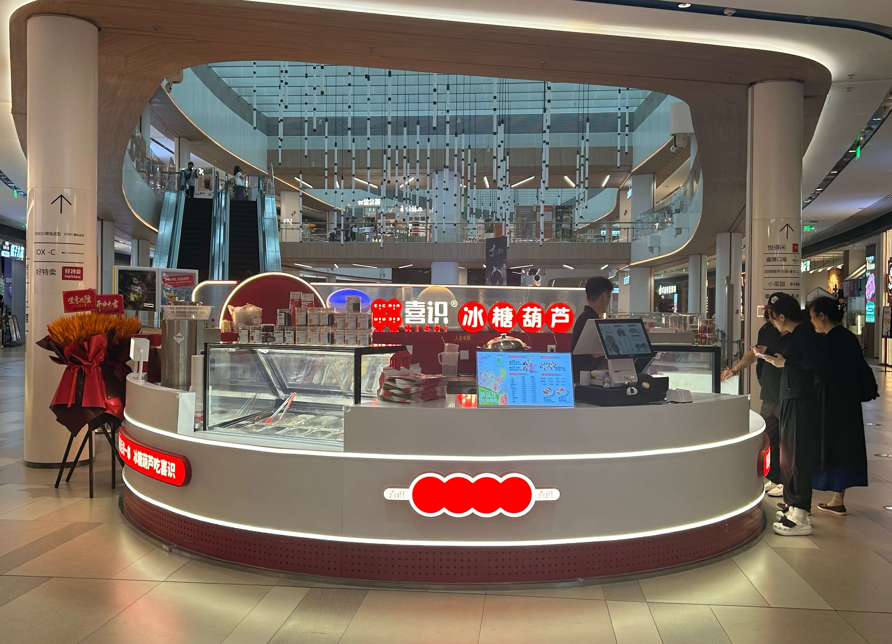
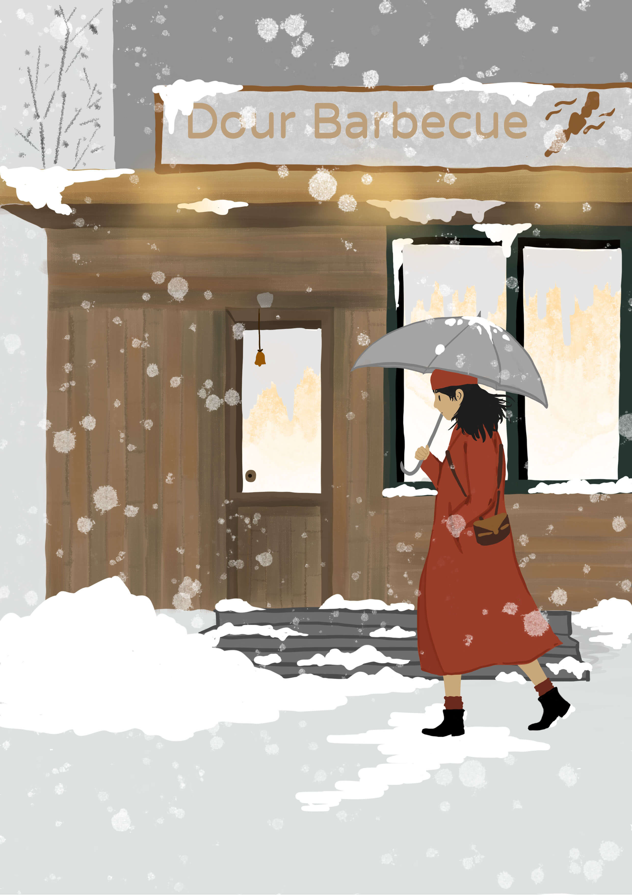
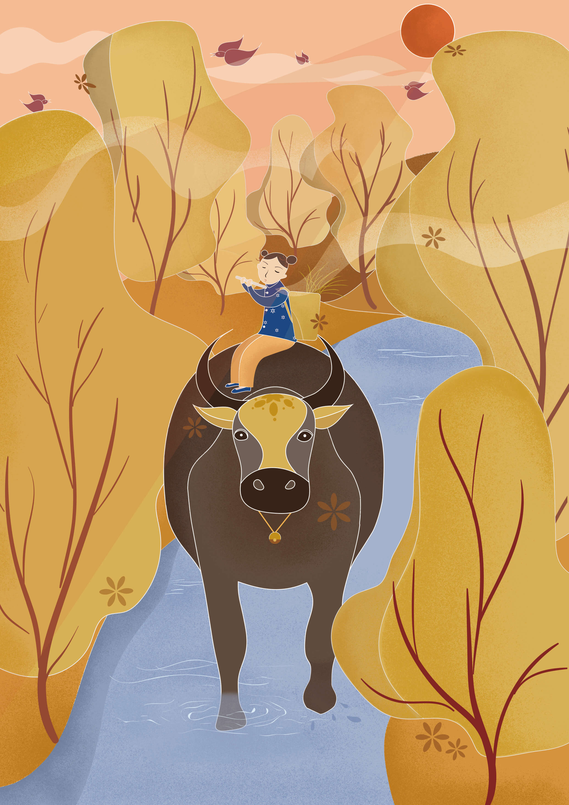
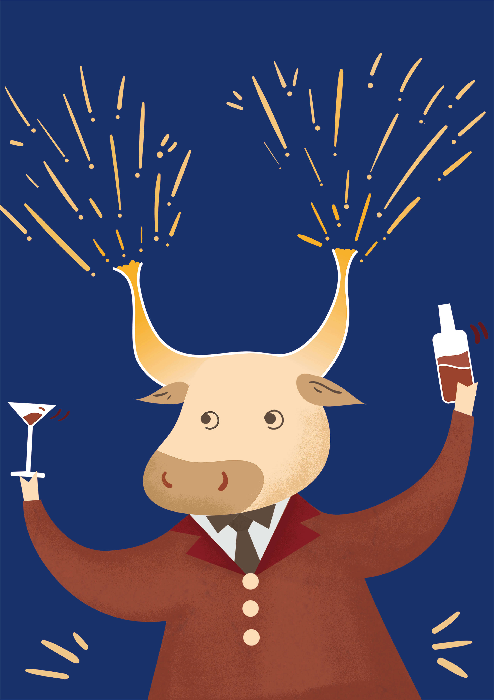
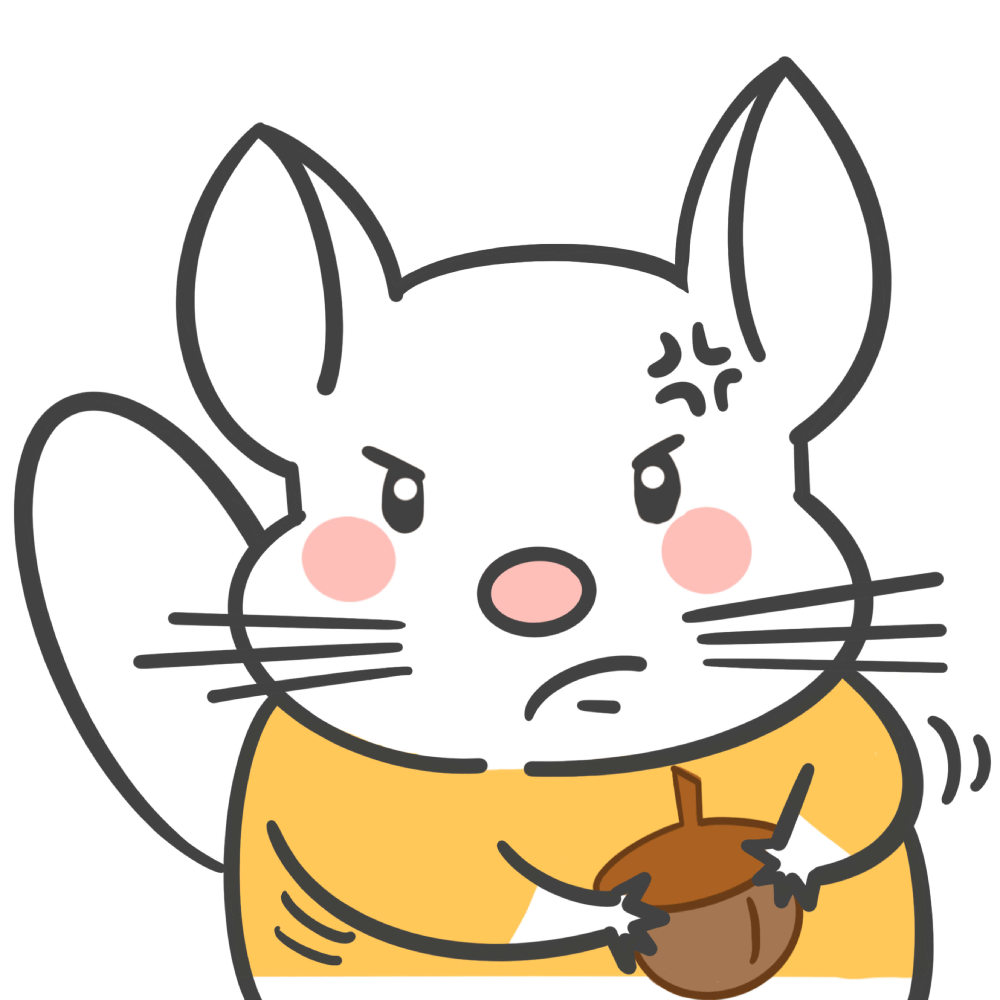
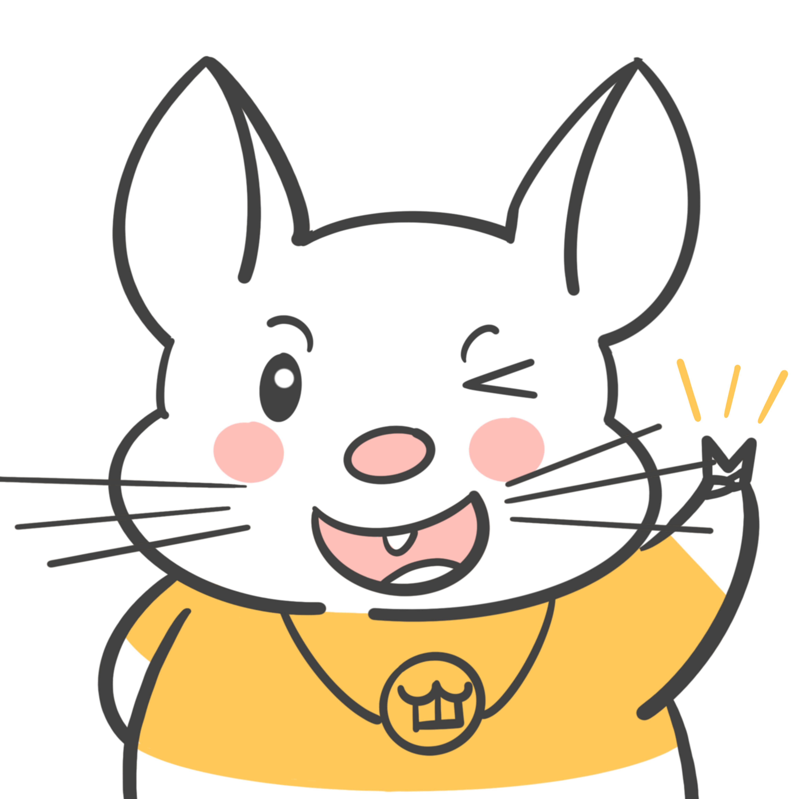

Selected Work
Portfolio
A selection of visual work across retail display design, spatial presentation, and illustration.
Kiosk Design Optimization
A series of kiosk and retail display explorations focused on spatial efficiency, visual clarity, and brand presentation within commercial environments.






Illustration
Personal illustration work exploring atmosphere, storytelling, and a softer visual language alongside more structured commercial and spatial projects.




